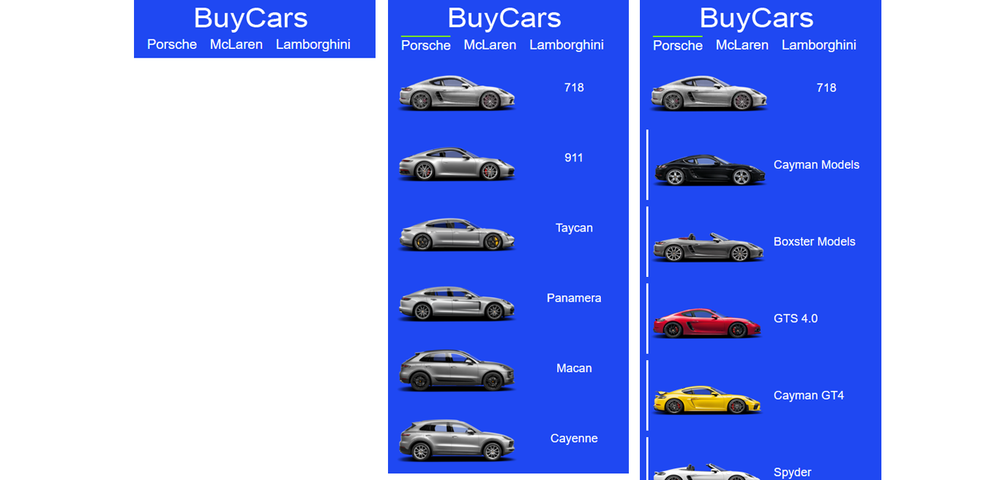
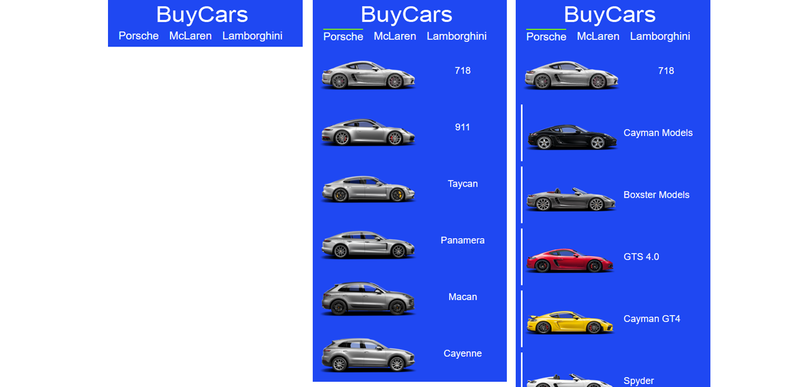

Buy cars front
Status: Construção
Ver Código TestarO que me levou a construir o projeto?
Com base em sites de grandes montadoras de veículos, estou construindo o Buy cars front, com o objetivo de aprender novas formas de construir um site utilizando html e css puro.
O projeto ainda está em construção e o seu diferencial com relação a outros projetos que já construí está em sua navbar que contém um dropdown com imagens e divs, que chama outro dropdown, desta forma tenho praticado muito posicionamento e CSS3.
 

Tecnologias
- JavaScript
- HTML5
- CSS3
- JS
Aprendizado
- Posicionamento com CSS3
- Herança com CSS3
- Estrutura HTML5
- Eventos JS
Estado do projeto: Construção
- Construir cta
- Construir conteúdo da página inicial
- Construir página individual dos veículos